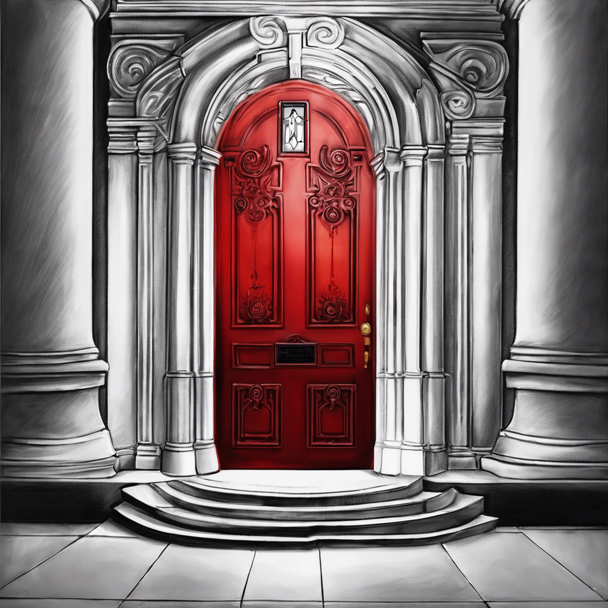

A vörös ajtón belépve vakító fény csap a szemedbe. A teremben ott lebeg a Tűzkorona, fenségesen, tüzes glóriában úszva. Bár a tested fáradt és sebesült, vágysz a hatalomra. Előrelépsz, és megmarkolod – ám azonnal égetni kezd, a mágikus tűz fellángol, s még az amulett sem képes megóvni a kimerült testedet. A tűz körbeölel, s miközben elnyel, még utoljára látod a koronát, ahogy újra a levegőbe emelkedik.
Vége – A tűz próbáját nem álltad ki.